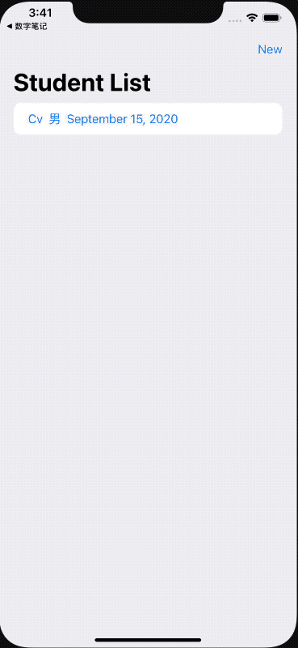

在前面的两篇文章中，我们探讨了如何制作一个可以判断是否进行了修改的表单，以及如何统一管理app各个层级View的弹出Sheet。今天我们将他们合并在一起，完成整个项目的最终目的——在Sheet中制作一个可以实时响应的表单，并且sheet会感觉表单的情况响应取消手势。

在SwiftUI中,根据需求弹出不同的Sheet
如何在SwiftUI中创建一个实时响应的Form
由来
在之前Form的例子中，虽然我们可以根据表单是否进行了修改来对cancel、edit等做出不同的响应，但是我们并没有办法控制用户直接使用手势来取消sheet，为了不让用户绕过程序的判断检查，不得已使用了fullScreenCover来规避手势取消。不过在实际使用中，尽管全屏sheet提供了更多的屏幕可用空间，但还是会给使用者带来了操作逻辑不统一的体验。
在去年，我使用的解决方案是，屏蔽sheet的拖动手势。
1
| .highPriorityGesture(DragGesture())
|
这也是没有办法的办法。
后来，SwiftUI-lab中，Javier提出了他的解决方案Dismiss Gesture for SwiftUI Modals](https://swiftui-lab.com/modal-dismiss-gesture/)。这个方案基本上实现了我想要的全部功能。不过这个方案看起来有些怪异。
- 数据和sheet控制混合在一起
- 对于sheet的控制过于繁琐，而且不直观
前段时间mobilinked编写了一段用于控制sheet的代码，结构精巧，使用简单。
本文对于sheet的控制采用了mobilinked的基础代码，并针对Form的响应做出了对应的修改。
在进行下面的代码说明前，如果你还没有阅读前两篇文章的话，请阅读后再继续。
在SwiftUI中,根据需求弹出不同的Sheet
如何在SwiftUI中创建一个实时响应的Form
目标
- 表单对输入的内容进行实时检查（是否有错误，是否有空白项）
- 表单将根据当前的状态决定是否允许sheet进行手势取消
- 当用户进行手势取消时，如果表单已经进行了修改，需要用户二次确认是否取消
代码简介
由于本文代码中多数部分同Form示例代码类似，所以仅简述一下新增及修改的部分。
SheetManager
1
2
3
4
5
6
7
8
9
10
11
12
13
14
15
16
17
| public class AIOSheetManager:ObservableObject{
@Published var action:AllInOneSheetAction?
var unlock:Bool = false
var type:AllInOneSheetType = .sheet
var dismissControl:Bool = true
@Published var showSheet = false
@Published var showFullCoverScreen = false
var dismissed = PassthroughSubject<Bool,Never>()
var dismissAction:(() -> Void)? = nil
enum AllInOneSheetType{
case fullScreenCover
case sheet
}
}
|
sheet控制代码
1
2
3
4
5
6
7
8
9
10
11
12
13
14
15
16
17
18
19
20
21
22
23
24
25
26
27
28
29
30
31
32
33
34
35
36
37
38
39
40
41
42
43
44
45
46
47
48
| struct MbModalHackView: UIViewControllerRepresentable {
let manager:AIOSheetManager
func makeUIViewController(context: UIViewControllerRepresentableContext<MbModalHackView>) -> UIViewController {
UIViewController()
}
func updateUIViewController(_ uiViewController: UIViewController, context: UIViewControllerRepresentableContext<MbModalHackView>) {
rootViewController(of: uiViewController).presentationController?.delegate = context.coordinator
}
private func rootViewController(of uiViewController: UIViewController) -> UIViewController {
if let parent = uiViewController.parent {
return rootViewController(of: parent)
}
else {
return uiViewController
}
}
func makeCoordinator() -> Coordinator {
Coordinator(manager: manager)
}
class Coordinator: NSObject, UIAdaptivePresentationControllerDelegate {
let manager:AIOSheetManager
init(manager:AIOSheetManager){
self.manager = manager
}
func presentationControllerShouldDismiss(_ presentationController: UIPresentationController) -> Bool {
guard manager.dismissControl else {return true}
return manager.unlock
}
func presentationControllerDidAttemptToDismiss(_ presentationController: UIPresentationController){
manager.dismissed.send(true)
}
}
}
extension View {
public func allowAutoDismiss(_ manager:AIOSheetManager) -> some View {
self
.background(MbModalHackView(manager: manager))
}
}
|
包装
1
2
3
4
5
6
7
8
9
10
11
12
13
14
15
16
17
18
19
20
21
22
23
24
25
26
27
28
29
30
31
32
33
34
35
36
37
38
39
40
41
42
43
44
45
46
47
48
49
50
51
52
53
54
55
56
57
58
59
60
61
62
63
64
65
66
67
68
69
70
71
72
73
74
75
76
77
78
79
80
81
82
| struct XSheet:ViewModifier{
@EnvironmentObject var manager:AIOSheetManager
@EnvironmentObject var store:Store
@Environment(\.managedObjectContext) var context
var onDismiss:()->Void{
return {
(manager.dismissAction ?? {})()
manager.dismissAction = nil
manager.action = nil
manager.showSheet = false
manager.showFullCoverScreen = false
}
}
func body(content: Content) -> some View {
ZStack{
content
Color.clear
.sheet(isPresented: $manager.showSheet,onDismiss: onDismiss){
if let action = manager.action
{
reducer(action)
.allowAutoDismiss(manager)
.environmentObject(manager)
}
}
Color.clear
.fullScreenCover(isPresented: $manager.showFullCoverScreen,onDismiss: onDismiss){
if let action = manager.action
{
reducer(action)
.allowAutoDismiss(manager)
.environmentObject(manager)
}
}
}
.onChange(of: manager.action){ action in
guard action != nil else {
manager.showSheet = false
manager.showFullCoverScreen = false
return
}
if manager.type == .sheet {
manager.showSheet = true
}
if manager.type == .fullScreenCover{
manager.showFullCoverScreen = true
}
}
}
}
enum AllInOneSheetAction:Identifiable,Equatable{
case show(student:Student)
case edit(student:Student)
case new
var id:UUID{UUID()}
}
extension XSheet{
func reducer(_ action:AllInOneSheetAction) -> some View{
switch action{
case .show(let student):
return StudentManager(action:.show, student:student)
case .new:
return StudentManager(action: .new, student: nil)
case .edit(let student):
return StudentManager(action:.edit,student: student)
}
}
}
extension View{
func xsheet() -> some View{
self
.modifier(XSheet())
}
}
|
调用方式
1
2
3
4
5
6
7
8
9
10
11
| NavigationView{
...
}
.xsheet()
Button("New"){
sheetManager.type = .sheet
sheetManager.dismissControl = true
sheetManager.action = .new
}
|
Form代码的修改
为了让我们的表单代码能够管理sheet，并且可以响应用户的取消手势，对Form代码做了如下的修改：
1
2
3
4
5
6
7
8
9
10
11
| @State private var changed = false{
didSet{
if action == .show {
sheetManager.unlock = true
}
else {
sheetManager.unlock = !changed
}
}
}
|
1
2
3
4
| 新增
.onReceive(sheetManager.dismissed){ value in
delConfirm.toggle()
}
|
详细代码请访问我的github
 支付宝打赏
支付宝打赏
 微信打赏
微信打赏